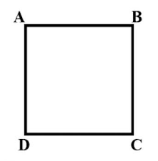

Welcome to katik
Hai sobat, selamat datang di katik :)
sebuah web apps sederhana yang berfungsi untuk menghitung nilai luas dan keliling bangun datar
Persegi
P.Panjang
Luas Persegi

Hai sobat, selamat datang di katik :)
sebuah web apps sederhana yang berfungsi untuk menghitung nilai luas dan keliling bangun datar